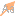

The graph window provides a 3D visual display of a graph.
You can navigate the graph using the mouse and keyboard keys (refer here for the mouse controls). Menus can be used to manipulate the graph. Some menus have keys assigned to them by default, but you can change the key assignments using Tools -> Options -> Keymap.
Each graph display has a sidebar containing some commonly used actions:
| Icon | Action |
|---|---|
|
Two Dimensional rotation. Only allow rotation around the Z-Axis
Useful for 2D graphs (all nodes have same z value) |
|
 |
Three Dimensional rotation. Allow rotation around X, Y, and Z axes. |
 |
Draw links. |
 |
Draw edges. |
 |
Draw transactions. |
 |
Draw/Don't draw nodes. |
| Draw/Don't draw connections. | |
 |
Draw/Don't draw labels on nodes. |
|  | Draw/Don't draw labels on connections. |
 |
Draw/Don't draw blazes. |
 |
Show all nodes, connections, blazes and labels. With this setting, the Graph Visibility Threshold is ignored. |
 |
Hide all nodes, connections, blazes and labels when the Graph Visibility Threshold is reached.
Visualising a large graph will have an impact on performance so this helps reduce the load on the graphics card. You can still use the histogram and table view to clean up your data before you enable graph visualisation. |
| Expand a composite node back to nodes and transactions | |
 |
Contract selected nodes into a composite node |
| Draw Mode | |
| Select Mode | |
| Draw Directed Transactions | |
| Draw Undirected Transactions |
When links and edges are drawn and the underlying transactions have different colors, grey is used. When transactions are drawn (each transaction is drawn with its own line), transactions are drawn individually up to a limit (default limit is eight). If there are more than eight transactions between two nodes, they will be drawn as the corresponding edge.
Text can be drawn above and below nodes: use the graph-level attributes "node_labels_bottom" and "node_labels_top" to determine what text is drawn. Similarly for transactions using the attribute "transaction_labels".